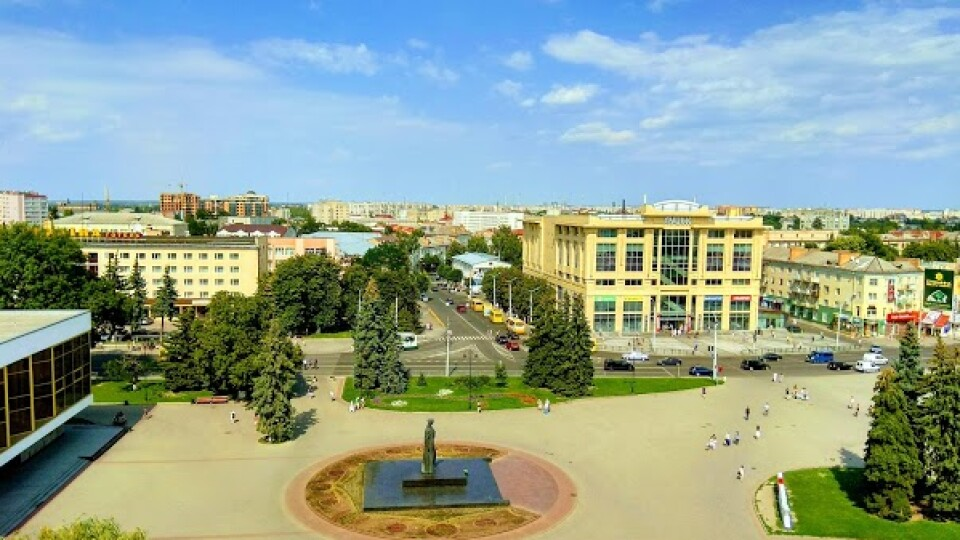
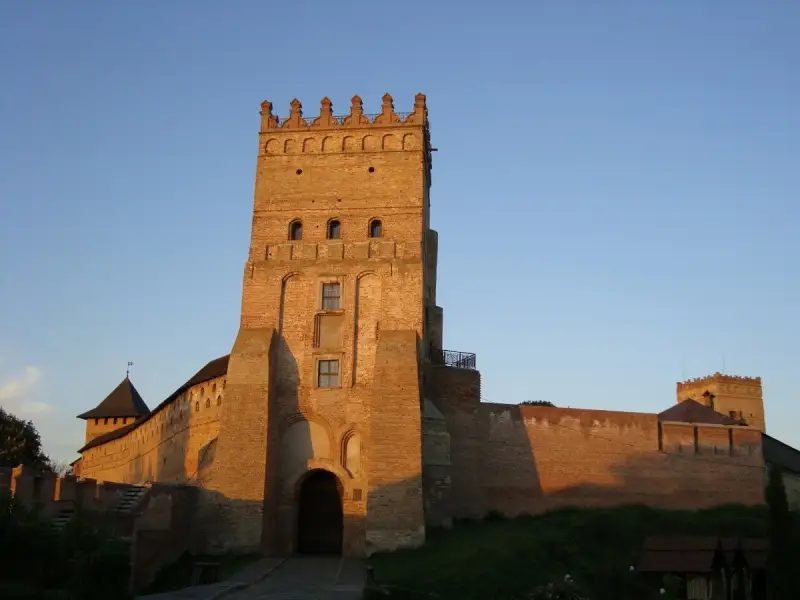

Луцьк – одне із найдревніших
міст України, яке має свою древню
історично- культурну спадщину та
вигідне географічне розташування.
Вперше згадка про нього з'явилася в
Іпатіївському літописі датованому
1085 роком, який вже тоді вказав на
досить істотний розвиток міста.
Сучасний Луцьк – знаходиться
на північному заході України,
обласний адміністративний центр
Волинської області, який входить до
складу “Єврорегіону Буг”, займає
площу понад 42 кв.км. Із заходу на схід і з півночі на південь він розкинувся
відповідно на 10 і 15 км. Місто розташоване у поліській і лісостеповій
фізикогеографічних зонах

Заповідник «Старий Луцьк»
«Старий Луцьк» - це заповідник з історико-культурним значенням,
це практично вся частина центру міста.
У нього входять обхідний і Верхній замки, католицькі монастирі
з їх багатою історією, жіночі і чоловічі (шарітки, єзуїти, брігітки, домініканці та ін.),
синагога, православні Хрестовоздвиженська та Покровська церкви, будинок Косачів, різноманітні музеї.
Перлиною заповідника є Верхній замок (або замок Любарта, побудований в 14 ст.).
Він є основною туристичною «приманкою» для гостей.
Періодично в ньому проходять лицарські турніри,
«Ночі в замку» з присмаком романтики, нічні екскурсії, ну і, зрозуміло, звичайні екскурсії.

Петропавлівський костел
Костел Св. Петра і Павла, кафедральний храм римо-католицького спадщини,
є пам'ятником ордену єзуїтів однієї зі знаменитих луцьких святинь.
Він отримав назву «Малого Риму» - за велику кількість церков,
різноманітних монастирів та інших духовних центрів.
Храми відкриті до відвідування туристами і гостями,
можна вільно потрапити навіть в підземелля, на яких
власне стоїть все Старе Місто. На Кафедральній площі
можна помилуватися на власні очі іконою Луцької Богоматері,
однією з найзнаменитіших і культових святинь Волині.